Domain-Driven Design
EventSotrming, Czysta Architektura

DDD - dlaczego?
- (Lepsze) zrozumienie biznesu
-
Oprogramowanie sensowne dla ludzi biznesu, nie tylko samych koderów
- Co zarabia? Biznes
- Zaangażowanie ekspertów domenowych
- Wspólne kształtowanie bizesu - czerpanie wiedzy z używanego oprogramowania
Ekspert domenowy - kto?
- Niekoniecznie PM czy analityk biznesowy
- Często użytkownik końcowy, nieznający technicznego żargonu
- Księgowy, dział sprzedaży, pracownicy call center pomagający użytkownikom
Cel: stworzyć oprogramowanie, które odzwierciedla model mentalny ekspertów dziedzinowych.Dostarczyć najbardziej przydatny dla biznesu model, najbardziej użyteczny.Niekoniecznie chodzi o zamodelowanie rzeczywistego świata
Droga do celu: poznanie i wspólne (dev + biz) rozwijanie "języka wszechobecnego" (Ubiquitous Language).W kodzie w historyjkach, w komunikacji
Domena?
- Dziedzina
- Rozwijanie oprogramowania przedsiębiorstwa (organizacji) = praca w ich dziedzinie
- To, co organizacja robi
- Ogółem: identyfikacja rynku + sprzedaż produktów/usług
- W szczegółach: unikalny obszar wiedzy specjalistycznej i sposób realizacji zadań
- Najlepszy produkt, najtańszy produkt, unikalny proces sprzedaży, możliwość zrobienia czegoś online, podejście do klienta, unikalny sposób komunikacji z klientem
Domena - cd.
$$$
Domena!
- Przestrzeń problemu
- Obszary naszego biznesu
- Core - dziedzina główna
- Tam pieniądz
- Dążenie do doskonałości
- Najwięcej zmian
- Nasz unikalny, często usprawniany proces
- Supporting - subdomena pomocnicza
- W pewnym sensie wyspecjalizowana
- Pomaga realizować Core
- Generyczne
- Potrzebne
- Outsourcing/gotowe produkty
Przykład - opowiadanie bajek
Bajki
Dyskusje
Identity & Access
Management
Dyskusje
Bajki
Identity & Access
Management
DDD - gdzie i kiedy?
- Nie wszędzie!
- Najważniejsze obszary
- Najbardziej wartościowe, dające szanse na osiągnięcie/zwiększenie zysków
- Domena główna (Core) i niektóre pomocnicze
- Tam, gdzie potencjał do rozwoju i zmian
- Gdy chętni do współpracy eksperci
- Gdy skorzystanie ułatwi integrację z innymi domenami
DDD
Modelowanie złożonych dziedzin w najprostszy możliwy sposób.NIGDY nie komplikować istniejącego rozwiązania
DDD
Strategiczne |
Taktyczne |
DDD a programiści
- DDD strategiczne = znajdowanie domen
- Domena = przestrzeń problemu
- Czasem mało ekscytujący biznes/problem
- Za mało szukania wzorców w problemie
- Za dużo w rozwiązaniach i to specyficznych
- Taki a taki framework
- Taki a taki wzorzec projektowy
Subdomeny - po co?
- Zrozumienie działania biznesu
- Podzielenie problemu na mniejsze
- Lepsze gospodarowanie zasobami - różne techniki w różnych subdomenach
Kiedy szukać?
- Jest kilkanaście funkcji biznesowych do zamodelowania
- Brak pełnego zrozumienia
- Potencjał do rozwoju, pomysły "na potem"
Szukanie domen - 1/2
- Analiza struktury przedsiębiorstwa (prawo Conwaya)
- Różni eksperci w tym samym dziale
- Dział kredytów, ale różne osoby od kredytów indywidualnych i firmowych
-
Język ekspertów - szukać czasowników (zachowań) idących w parze ze słowem
- Różne zachowania dla tego samego słowa
- Ta sama rzecz, inaczej nazwana
- Np. klient w dziale kredytowym i adresat w dziale powiadomień
- Sprawdzenia: czy ktoś inny niż klient może być adresatem?
- Nagle np. nowa subdomena "upoważnienia"
Szukanie domen - 2/2
- Szukanie wartości biznesowej
- Np. zarabiamy na klientach firmowych
- Indywidualni by nas nie interesowali, ale niektórzy polecają w swoich firmach
- Analiza kroków procesu biznesowego
- Np. oferta złożona i oferta końcowa są rozdzielone etapem akceptacji przez klienta
Prawo Conwaya
Any organization that designs a system (defined broadly) will produce a design whose structure is a copy of the organization's communication structure
Subdomeny nie są stałePilnować i śledzić zmiany
EventStorming
-
Narzędzie do prowadzenia rozmowy, dzięki któremu system, architektura i procesy stają się
bardziej oczywiste
- Narzędzie do odkrywania, a nie dokumentowania
- Szybkie znajdowanie braków w wiedzy biznesowej
- Forma warsztatowa, stopniowe zyskiwanie wiedzy
- Synchronizacja wiedzy między ekspertami domenowymi
- Rodzaje
- Big Picture ES - znajdowanie domen
- Process Modelling, Process-Level ES - odkrywanie rozwiązań, nowe procesy i usługi
- Software Design, Design-Level ES - zbliżanie się do kodu (ile wlezie), taktyczne DDD
- github.com/mariuszgil/awesome-eventstorming
Big Picture
- Znajdowanie domen
- Poznanie procesu biznesowego jakim on jest
- Retrospekcje, reboot organizacji, transformacja, duże zmiany architektoniczne, startupy, kick-offy
- Koncentracja na zdarzeniach biznesowych
- CO się stało, nie JAK
- Oś czasu - łatwo znaleźć luki
-
Uczestnicy sesji
- Interesariusze wewnętrzni (np. jakiś reprezentant użytkowników)
- Zaangażowani w projekt
- Zainteresowani rozwojem projektu
Etapy
- Przygotowanie sali
- Chaotyczna eksploracja
- Wprowadzenie osi czasu
- Opowieść od końca
- Ludzie i systemy
- Problemy i okazje
Przygotowanie
- Duża przestrzeń do ruszania się
- Minimalna ilość krzeseł
- Duża ściana z podkładem (papier ploterowy)
- Karteczki i flamastry - dla każdego uczestnika
- Kosz na zgniecione karteczki
- Błędne rozumienie, błędne decyzje biznesowe
- Potencjalne oszczędności, że tego nie zaimplementowaliśmy
Chaotyczna eksploracja
- Zdarzenia, czas przeszły dokonany
- Co istotnego w biznesie z Twojej perspektywy
- Czas przeszły = myślenie o skutkach, o faktycznych zmianach stanu systemu
- "Wystawiono fakturę". Istotna zmiana stanu w systemie, ma jasny punkt w czasie
- Każdy osobno nakleja
- Jak 15+ osób, to np. 3-osobowe grupki
- Chcemy poznać opinie wszystkich
- Kończymy, gdy spowalnia tempo powstawania zdarzeń, np. pierwsza osoba przestaje pisać
- Można ograniczyć jakimś minutnikiem
Wprowadzenie osi czasu
- Porządek chronologiczny
- Rozwidlenia dróg
- Grupowanie podobnych zdarzeń (start dyskusji)
- Nowa kartka - hotspot
- Punkt dyskusji
- "OK, tu jest jakiś problem, rozwiążemy go później"
- Gdy czegoś nie wiemy - też
- Hotspotów można używać już cały czas
- Za dużo hotspotów? Nie jesteśmy gotowi na ten projekt
- Kreski/ramki dla równoległych procesów
Opowieść od końca
- Prowadząca/ktoś z grupy odczytuje "od tyłu"
- Koncentracja - czy czegoś brakuje?
- Nowe zdarzenia, poprawki w procesie, rozgałęzienia
- Pytania pomocnicze
- "Co jeszcze musiało się stać, żeby X?"
- "Czy między X a Y dzieje się coś jeszcze?"
- "Co jeśli X by się nie powiodło?"
- "Czy X zawsze w tej sytuacji?"
Ludzie i systemy
- Małe żółte i większe, "czerwonawe" karteczki
- Niekoniecznie role w systemie
- Mała firma/dział? Można nawet nazwiskami :)
- Systemem może być wew. dział, urząd, społeczeństwo
- Nie każde zdarzenie ma swojego aktora
Problemy i okazje
- Zielone i hotspotowe karteczki
- Dodajemy potencjalne korzyści, punkty rozwoju
- Priorytetyzować - strzałeczki przy ważnych problemach/okazjach
- Zidentyfikowanie subdomen
Prowadzący
- AKA facilitator/moderator
- Nie wpływa na model, nie ingeruje
- "Zadaj takie pytanie"
- "Zwróć na to uwagę"
- "On powiedział to"
Online
- 3 godziny na sesję = max
-
Więcej centralizacji, synchronizacji
- Czytanie na głos, po kolei
- Ktoś sortuje, pozostali komentują
- Więcej hotspotów
- Dyskusje blokują pozostałych
- Szybki "hotspot" i idziemy dalej
- Po wszystkim - skupienie na hotspotach, interesujących najwięcej uczestników
- "Online collaborative modeling session on top of EventStorming notation"
Zaadoptowanie ES
- Praktyka - najpierw wewnętrznie, w zespole
- Np. CI, zadanie "od planningu do commita"
- Przećwiczyć w różnych rolach i z różnymi problemami
- Rozszerzenia - alert, model Machine Learning, zdarzenie opcjonalne, cykliczne
- ES to nie cel sam w sobie
- Co do zasady - z procesu i rozumienia ma coś wyniknąć
- Na jakie pytanie odpowiada ten sytem? Jaką potrzebę?
- Transfer wiedzy, chęć ujawnienia niewiedzy
- Zmapowanie procesów
- Wydzielenie, zaproponowanie rozwiązań
Bounded Context
- Kontekst ograniczony, kontekst związany
- Przestrzeń rozwiązania
- Obszar stosowania danego modelu
- Model - abstrakcje wybranych aspektów domeny, rozwiązujące problemy z nią zwiazane
- Skończony system
- Granica pojęciowa
- Niby DDD = domeny, ale BC nawet ważniejszy
- Co możemy zakodzić
- BC = potencjalny mikroserwis
Ubiquitous Language
- "Wszechobecny język", platforma komunikacji
- Współdzielony język rozwijany przez zespół (ekspertów dziedziny i programistów)
- Opis reguł działania biznesu
- W dokumentacji, w rozmowach ekspertów, w rozmowach programistów, w kodzie
-
Niezgoda ekspertów w kwestii pojęć? Niepełne zrozumienie i szansa na
poprawę
- A może eksperci z innych kontekstów? :)
- Np. "produkt" w magazynie, "produkt" w koszyku zakupowym
- Szukamy najlepszego języka dla projektu
BC a język
- Wszechobecny język zawsze w obrębie kontekstu, 1:1
- Wspólne rozumienie pojęć w obrębie kontekstu
- BC mniejsze niż się początkowo wydaje, ale wystarczająco duże, żeby uchwycić kompletny UL danej dziedziny biznesowej
-
AccountUtil,AccountHelper- to nie jest język ekspertów, usuwać z kodu - Można utrzymywać słowniczek pojęć jako dokumentację
BC - przykład
| Mama | |
| Dom | |
| Wilk | |
Moduły
- Kontekst wyznacza granice lingwistyczne, ale możemy tam mieć kilka modułów
- Moduły ~ pakiety w Javie
- Źle dobrane moduły prowadzą do modelu anemicznego
controllers,services,entities
- Hermetyzacja, kontrakty
- Klient naszego kodu nie powinien wiedzieć jak to działa. Co robi, a nie jak
Model
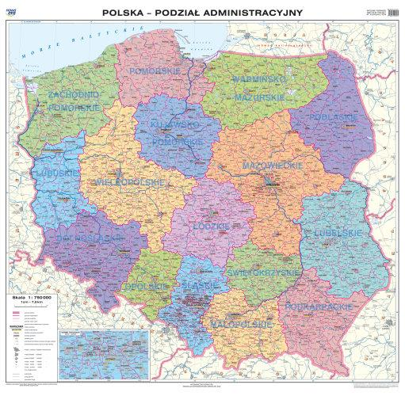
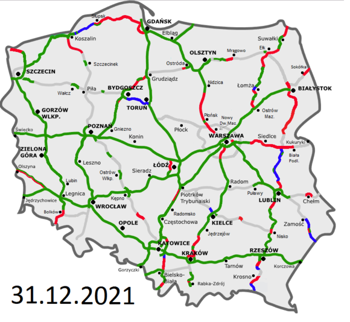
- Odwzorowanie pomysłu, fragmentu rzeczywistości
- Uproszczenie, pewna interpretacja
- Wyodrębnienie niektórych, przydatnych do rozwiązania problemu aspektów
- Pominięcie zbyt szczegółowych
Model - kod
- Zestaw klas/funkcji
-
Zachowania i zestawy danych do zachowań
Książka + cenaKsiążka + lokalizacja w magazynie- Tylko pozorne łamanie DRY, bo to są książki w innych aspektach
- DDD = dobre programowanie obiektowe
- Obiekty hermetyzują pola, udostępniają zachowania
getTitleto nie zachowanie
Anemiczny model
- Worek na dane, dla ORM i innych mapperów
- Walidowanie i procesowanie nie na poziomie obiektów, tylko gdzieś w serwisach
- W Javie spopularyzowany przez
JavaBeani pierwsze wersje Hibernate'a i innych - Kopiowanie wzorców z poprzednich projektów, przykładów
- Zły, bo wysokie koszty rozwijania
Anemiczny model - wady
- Rozwija się niezależnie od zachowań
- Rozrastające się serwisy i worki na dane
- "O, mam już klasę
Book" - Promowanie podejścia "wszyscy mają dostęp do wszystkiego"
- "O, mam już klasę
- Bez zachowań - niepełne rozumienie pojęć
- Łatwiej coś nazwać, gdy mamy zachowania niż dopasowywać zachowania do nazwy
setigetzubażają nasz język
- Mogłyby być same SQL-e w kodzie albo całość na poziomie procedur składowanych bazy
Projektujemy zachowania obiektów.Zachowania mają być właściwie nazwane, żeby oddawać istotę języka wszechobecnego
customer.setCallingTime(CallingTime.DEFAULT);
customer.setCallingConsultant(consultant);
vs.
customer.callAtDefaultTime(consultant);
vs.
var time = callCenter.getDefaultCallingTime();
consultant.call(customer, time);
vs.
callCenter.call(customer, choosingConsultantPolicy);
Domena, kontekst, model
| Domena | Bounded Context |
|---|---|
| problem | rozwiązanie |
| odkrywamy | definiujemy |
| domena | model domenowy |
- Idealnie 1 domena = 1 BC
- Analogia: podłoga=problem, wykładzina=rozwiązanie
- Nowy projekt - idealne dobranie wykładziny do podłogi
- Isniejący projekt - dywan, wykładzina i szafka, która przykrywa niepełne pokrycie podłogi
Idealne konteksty
- Jak najbardziej autonomiczne w decyzjach
- Minimalizacja synchronizacji
- Jak najmniej kontekstów zaangażowanych w pojedynczy proces biznesowy
- Np. proces zamówienia = tylko modele zamówienia i dostępności
- Informacje nie powinny się zmieniać w kilku kontekstach jednocześnie
- Zespół per kontekst. Jak z mikroserwisami
Rozmowy z ekspertami
- Szukanie antywymagań, "podpuszczanie"
- Cel: minimalizacja synchronizacji
- "Czy historia lokat może wpływać na ofertę kredytu?"
- Jeśli tak to może konteksty produktów dla klientów indywidualnych i firmowych zamiast kontekstu lokat i kontekstu kredytów?
- Walidowanie pojęć
- "Czy użytkownik na pewno powinien istnieć w danym kontekście?"
- Np. kontekst dyskusji to nie "użytkownicy", a "moderator" i "autor wpisu"
Process Modelling
- Szukanie kontekstów dla domen
- Nie odkrywamy, tylko definiujemy, projektujemy rozwiązania
- Jakie problemy (subdomeny) do rozwiązania?
- Np. "gdzie to leży i skąd się wzięło" = sytem magazynowy
- Dużo zdarzeń, a mało logiki, reguł = tylko logika prezentacyjna
- Dużo par komenda-zdarzenie = CRUD
- Usuwanie zbędnych zdarzeń i rozkładanie innych na bardziej szczgółowe
- Rozwiązywanie hotspotów
- Np. "Trwa za długo" - czyli ile? A ile powinien?
Selekcja zdarzeń - 1/2
- Środowiskowe
- Nie z procesu, a z otoczenia procesu ("Klient wszedł do sklepu")
- Odrzucamy, ale poszerzają horyzonty np. managera
- Myślenie "przyszłościowe"
- UI-owe, interfejsowe
- Nie z przestrzeni procesu biznesowego
- "Wyświetlono formularz X", "Wybrano datę z kalendarza"
- Czasem konieczne przełamywanie tego myślenia
- "Co jeszcze się zmienia oprócz widoczności przycisku?"
- Infrastrukturalne
- Z przestrzeni technicznej
- Domenowe
Selekcja zdarzeń - 2/2
- Zdarzenia - istotne zmiany
- Zmiana statusu nie jest istotna
- Istotne jakie zdarzenia w konsekwencji. Zmiana stanu agregatów, a nie statusu
- Zamiast "Order Confirmed" wyciągamy np. "Items blocked", "Prices Frozen"
- Pytania do każdego zdarzenia
- Dlaczego to się zmienia (dlaczego jest ważne)?
- Kto i po co to zmienia? Jak realizujemy?
- Jakie są konsekwencje tej zmiany?
- Czy można wycofać tę zmianę?
- Czy można powtórzyć tę zmianę?
Nowy problem
- Mapujemy domeny i konteksty
- Jaka nazwa nowej domeny? Jaka wizja?
- Które pojęcia są jej częścią?
- Czy warto podzielić ją na subdomeny?
- Kto powinien nad nią pracować i czy można stworzyć odpowiednie zespoły?
Kontekst dla domeny
- Jakie oprogramowanie już mamy? Czy może być wykorzystane?
- Co kupić lub stworzyć?
- Jak zintegrować/połączyć te systemy?
- Jakie dodatkowe mechanizmy integracji?
- Jakie wymagane nakłady pracy?
- Czy inicjatywa strategiczna ma wysokie prawdopodobieństwo sukcesu?
- Czy pojęcia z języków wszechobecnych są całkowicie różne?
- Gdzie występują części wspólne? Jak są one mapowane pomiędzy BC?
- Który BC zawiera pojęcia z domeny głównej?
Integracje kontekstów - 1/3
- Partnership (partnerstwo)
- Zespoły pracują razem
-
Shared Kernel (jądro współdzielone)
- Podzbiór modelu dzielony między zespołami
- Zmiany w części wspólnej wymagają konsultacji
-
Customer-Supplier (klient-dostawca)
- Supplier zgadza się na pewien interfejs, wypełnia go i dostarcza implementację
- Konteksty mogą ewoluować niezależnie do czasu zmian w interfejsie
- Conformist (konformista)
- Jw., ale dostawca ignoruje potrzeby klienta
Integracje kontekstów - 2/3
- Anticorruption Layer, ACL (warstwa zapobiegająca uszkodzeniu)
- Klient dostarcza sobie własną implementację, warstwę "izolacyjną", "tłumaczeniową", bliższą swojemu kontekstowi
- Ta warstwa korzysta z oficjalnych API/klienta innego kontekstu
- Open Host Service (usługa otwartego hosta)
- Oficjalne API (REST, RPC)
- Published Language (język opublikowany)
- Publikowanie zgodnie ze wspólnym językiem pomiędzy kontekstami
- Często łączy się z Open Host Service
- + kolejki, eksport plików
- JSON, XML, ProtoBuf, zdarzenia
Integracje kontekstów - 3/3
- Separate Ways (oddzielne drogi)
- Coś usunąć, coś lepiej wydzielić i z głowy :)
- Minimalizowanie integracji
- Big Ball of Mud (wielka kula błota)
- Stan do jakiego dążą systemy
- Gdy nie myśleliśmy o integracji
- Zabezpieczać się, żeby taki stan nie "wyciekł" do innych kontekstów
Async > sync
- Async = eventual consistency
- Brak problemów SLA
- Odwzorowanie zewnętrznych danych w swoim kontekście (cache)
- Niekoniecznie kolejki - np. odpytywane cyklicznie API
/notifications
Design-Level ES
- Z ekspertami z domeny. Sesja per BC
- Komendy i zdarzenia będące konsekwencjami łączymy przy pomocy reguł
- Ma być gotowe do zakodzenia!
- Interesariusze muszą być "reasonably happy"
- Wszystkie hotspoty zaadresowane
- Dobrze określone, spójne ("reasonably consistent") komponenty
- Widoczne granice
- Check: od jutra to kodzisz. Czegoś Ci brakuje? Ostatnia szansa
Artykuły Design-Level ES
- github.com/mariuszgil/awesome-eventstorming
- Seria "First Pop Coffee Company" - od Big Picture aż do kodu (w C#)
- Detailed agenda for a DDD Design-Level Event Storming - part 1
- Detailed agenda for a DDD Design-Level Event Storming - part 2
- 7 tactics that will make your DDD Design-Level Event Storming pay-off
Przykład 3 świnek
{kind=link}
{kind=link}
{kind=link}
Big Picture
Design-Level
Eksperci domenowi
Często nie są świadomi, jak złożone są ich procesy myślowe.Na co dzień używają reguł zgodnie z zasadami zdrowego rozsądku, usuwają sprzeczności i niedomówienia.Program nie może tego zrobić.Rozmawiamy i zwiększamy spójność reguł
Rozmowy z ekspertami
- Nie zawsze Storming, czasem tylko dopytanie
- Np. podczas przerw na kawę
- Vaughn Vernon: sami przynieśmy kawę, żeby zagadać i wyciągnąć jak najwięcej
- Wylistować pojęcia w zespole, obudować je zachowaniami, przejść przez listę z ekspertem
- Grupować pytania, zadawać jak najwięcej jednocześnie
domainlanguage.com/ddd/whirlpool
- Scenariusz po scenariuszu
- To są historyjki domenowe, a nie użytkownika
- Zapisywać - przy ponowieniu opowieści ekspert może użyć innych słów
- Reguły, zdarzenia, komendy
Bonus: Event Modeling
- Skupienie się na konkretnym scenariuszu
- Założenie konkretnych reguł
- Happy path
DDD strategiczne
- Zaawansowane modelowanie DDD – techniki strategiczne: konteksty i architektura zdarzeniowa (artykuł)
- Jak wciągnąć eksperta domenowego w wir modelowania - techniki DDD (jeszcze przed EventStormingiem)
- Event Storming
- Event Storming - od analizy do architektury
- Poznaj swoje granice - o odkrywaniu granic obiektów i modułów
- Remote EventStorming (not Event Storming): Redesigning Everything
DDD
Strategiczne |
Taktyczne |
Design-Level - cd.
- Pracujemy na regułach
- Np. "czy karta wygasła", "czy karta zastrzeżona" to może być 1 reguła - "czy karta aktywna"
- Jak już znamy komendy, widoki, zdarzenia (oznajmianie czegoś), to łatwo zacząć z BDD
- BDD - w warstwie aplikacji, owijającej domenę
- Testy mają wysterować nasz model
- W istniejącym systemie też - zrozumiemy jak coś działa w oderwaniu od aktualnego rozwiązania
Building blocks - 1/5
- Tożsamość określona identyfikatorem
- Agregowanie/hermetyzacja niezmienników, fizyki biznesu
- Brak getterów/setterów, metody biznesowe
- Reguły spójne natychmiast i jednocześnie
- Np. faktura (dodatnia wartość) z numerem faktury i pozycje na fakturze (min. 1)
Agregat
- Graf obiektów domenowych, spójna całość w obrębie 1 transakcji
- Nie może istnieć agregat, który nie spełnia swoich reguł
- Komunikacja możliwa tylko przez korzeń (aggregate root), czyli np. tylko publiczne metody
- Zapisywany i wyciągany w całości (repozytorium)
- Pomiędzy agregatami - spójność ostateczna/końcowa (eventual consistency)
- Rozmawiając z ekspertami nie mówić "niespójne", tylko "dane sprzed X minut/sekund"
- Walidacje - np.
BusinessException, rezultat - Dobre zamodelowanie zmniejszy ilość relacji między danymi
- Można rozważać bazy nierelacyjne dla agregatów
- Nie przekazujemy agregatu do agregatu (efekt domina)
Encje
- Mutowalne, więc dbamy o reguły
- Warto rozbijać
- Np. jak coś w stylu maszyny stanów, to każdy stan inną encją
- Kredyt: oferta, draft umowy, umowa
- Jak agregaty - samotne wyspy, raczej bez powiązań
Jaka nazwa?
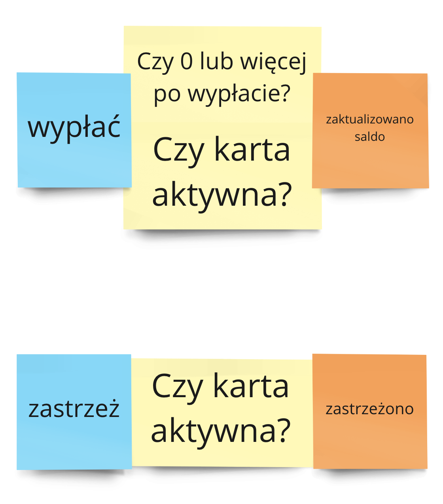
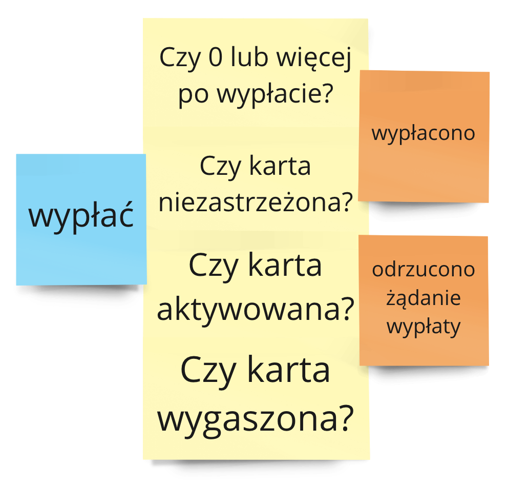
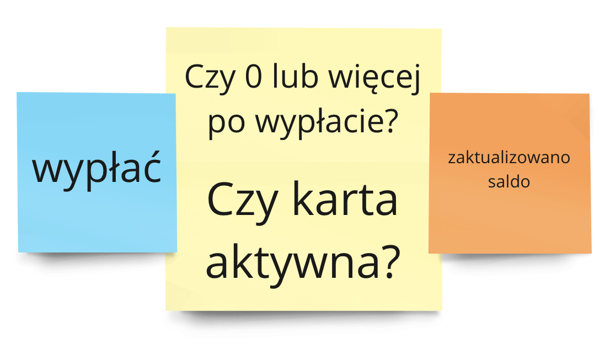
Gibberish Game
- Na etapie refactoru, ale też przy nowych rzeczach
-
Nazwa
Payerukształtuje (być może źle) sposób myślenia o zakresie odpowiedzialności Payerish-
Alternatywnie:
Ble,Bla,Alfa,Beta
-
Alternatywnie:
- Zmieniamy nazwę dopiero po przeanalizowaniu i głębszemu zrozumieniu
- 3 perspektywy patrzenia na obiekt: Being (pola), Behaving (metody), Becoming (koszyk -> zamówienie)
- Jak poznamy te perspketywy łatwiej z nazwą
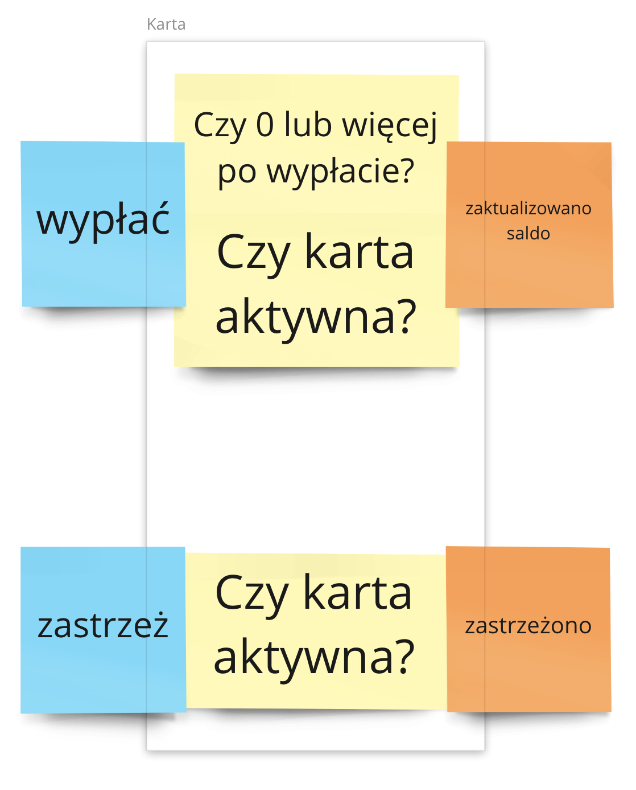
Istniejący system
- Bottom-up: wychodzimy od kodu, patrzymy i pytamy
- Czy to i to musi się zmienić jednocześnie?
- Ile możemy poczekać z przeliczeniem tego?
- Czy coś się stanie, jak się spóźnimy i zejdziemy na ujemny debet?
- Czy płatność może pojawić się w historii dopiero po kilku minutach?
- Jak wychwycimy co spójne natychmiast, atomowo, to mamy granice agregatu
- Czasem łatwiej "spłaszczyć" kilka klas - zamienić wszystko w 1 procedurę. Chwytamy proces, szukamy reguł spójności i dopiero dzielimy na klasy
Building blocks - 2/5
- Zapis i odczyt agregatu
- Jedna transakcja bazodanowa (~reguły spójne natychmiast)
- Agregat wczytany? Gwarancja niezmienników
- W warstwie domeny tylko jako "port"
- To serwis aplikacyjny decyduje kiedy użyć domeny. On woła repo do odczytu i zapisu
Warstwa aplikacji
- Komponenty interfejsu użytkownika, punkty końcowe, ukierunkowane na usługi (REST, SOAP)
- Zarządzanie zabezpieczeniami, transakcjami, logami, błędami, publikacja zdarzeń, operacje bulk, komunikacja z innymi systemami
- Fasada dla modelu (punkt wejścia)
-
Przypadki użycia (user stories) tłumaczone na logikę biznesową, domenową
- Brak logiki domenowej w serwisie aplikacji
- Zaczytanie agregatu/serwisu domenowego i wołanie jego logiki
Building blocks - 3/5
- Nośniki informacji, struktury danych
- Tożsamość wynikająca z właściwości
- Np. pieniądz, 2x 50 groszy tożsame z 1x 1 zł
- Zdarzenia komunikowane światu (jak ES)
VO
- Dbamy o reguły w konstruktorze/metodzie wytwórczej
- Niemutowalny
- Dobrze mieć metody wytwórcze i ukryty konstruktor
- Konstruktor bez walidacji
- Np. kiedyś min. przelew 100, a teraz 1000 zł
- Na bazie będą stare przelewy, więc je odtworzymy konstruktorem
Building blocks - 3½/5
- Oszustwo, dodatkowy, nieoficjalny klocek DDD
- Zrzut stanu, zdjęcie rentgenowskie agregatu
- Wykorzystywane do mapowania pod API i pod bazę danych
- Wzorzec memento
Widoki
- Wizualizacje na potrzeby front-endu
- Można np. CQRS - osobne repo do czytania
- Dedykowane obiekty
- Odczyt nie zepsuje stanu systemu, nie trzeba sprawdzać reguł
| Widoki | Komendy |
|---|---|
| Cache | Bez cache |
| Można ponawiać | Nie można |
| Więcej | Mniej |
CQRS w BC
- Można nawet 2 tabele/bazy
- Synchronizacja
- Komenda w 2 miejscach
- Zdarzenie po komendzie i obsługa w jakimś
ReadModelUpdater
- Czasem 1 baza, ale odczyt zwykłym SQL-em, np. z kilku agregatów
- Można jawnie stworzyć klasy
Command -
CommandHandlerperCommand+ jakieś generyczne, np.LoggingCommandHandler, obsługujący wszystkie
Istniejący system
- Zbierać czas pobierania rzeczy z bazy
- Znaleźć miejsca najbardziej kosztowne czasowo
- Przepisać ze skomplikowanych encji Hibernate'a na zwykły SQL i dedykowane obiekty odczytu
- Po przepisaniu: część połączeń w obiektach można usunąć
- Dodać nowe - cache, kolejne DTO
Zdarzenia
- Wewnętrzne - np. dla 2 agregatów w BC
- Zewnętrzne, publiczne
- Bez odwołań do wewnętrznych VO
- Dla pozostałych BC
- Wersjonowane
- Jakiś identyfikator + np. identyfikator przyczyny (źródłowe zdarzenie, komenda, agregat)
Publikacja
- Komendy agregatu mogą korzystać z
Publishera - Zdarzenia zwrócone przez komendy lub przechowane w agregacie - do opublikowania w aplikacji
- Dobre miejsca: serwis aplikacyjny lub repozytorium
- Uwaga na transakcje (np.
@Transactional) - At most one delivery (0-1) vs. At least one delivery (1+)
Usprawnienia Springa
- Zdarzenia: DDD Aggregates and @DomainEvents
- CRUD (+ zdarzenia): Spring Data REST Reference Guide
Building blocks - 4/5
Specification
- Obiektowy
if, metodaisSatisfiedBy - Sterowanie operacjami w domenie
- Lepsze pokrycie testami
Policy
- Wzorzec strategii
- Np. serwis "księgowy" nalicza należność, a w zależności od kraju przekazujemy inną politykę (strategię) liczenia podatku
Building blocks - 5/5
Fabryka
- Dla skomplikowanych encji/agregatów
- Bezstanowa logika domenowa
- Np. kalkulator/księgowy działający na fakturze
Blocki a biznes
- Używane w komunikacji z biznesem
- Uczymy ekspertów - to ma tożsamość taką, tamto inną
- To są "mocki"/"makiety" dla backendu
- Nie UML, tylko building blocki
Blocki - podsumowanie
- Zachowania modelu
- Zdarzenia, komendy, widoki, reguły, polityki
- Design-Level ES
- Struktury modelu
- VO, encje, serwisy domenowe
- Cykl życia modelu
- Fabryki, repozytoria
DDD Taktyczne - kod
public interface Aggregate<ID, T>
extends DomainEntity<ID, T> {
}
Polityka z ES
- Karteczka zbiera wiele różnych zdarzeń albo np. kilka razy w procesie? Saga/process manager
- Jakiś osobny BC/mikroserwis, który nasłuchuje
- Wszystkie zdarzenia albo nie możemy iść dalej
- Np. polecenie użytkownika: link aktywacyjny, dostał kartę, zrobił
transakcję za min. 100 z ł
- Dopiero po tych 3 zdarzeniach możemy przypisać benefit polecającemu
- Np. wybór dostawcy - komendy "przygotuj ofertę" dla 3 kurierów i czekanie
na odpowiedzi
- Po otrzymaniu - polityka wyboru dostawcy i skutek
- Warto zamodelować czas - zdarzenie wyzwalane po starcie polityki z opóźnieniem, np. 3 godziny
- Jeśli nie mamy odpowiedzi w tym czasie - jakaś obsługa
- Silniki workflow (workflow engine), jakieś biblioteki
class LowerFeeLrp {
private final LowerFeeConditionsRepository conditionsRepository;
private final LowerFeeActivationService activationService;
@EventListener
public void handle(CustomerCreated event) {
LowerFeeConditions conditions = conditionsRepository.getByEvent(event);
conditions.assignUser(event.customerId());
conditionsRepository.save(conditions);
applyIfPossible(conditions);
}
@EventListener
public void handle(CardActivated event) {
LowerFeeConditions conditions = conditionsRepository.getByEvent(event);
conditions.assignCard(event.cardNumber(), event.customerId());
conditionsRepository.save(conditions);
applyIfPossible(conditions);
}
@EventListener
public void handle(MoneyWithdrawn event) {
LowerFeeConditions conditions = conditionsRepository.getByEvent(event);
conditions.addTransactionMoney(event.amount());
conditionsRepository.save(conditions);
applyIfPossible(conditions);
}
private void applyIfPossible(LowerFeeConditions conditions) {
if (conditions.fulfilled()) {
activationService.activate(conditions.getAssignedCard());
}
}
}
Clean Architecture
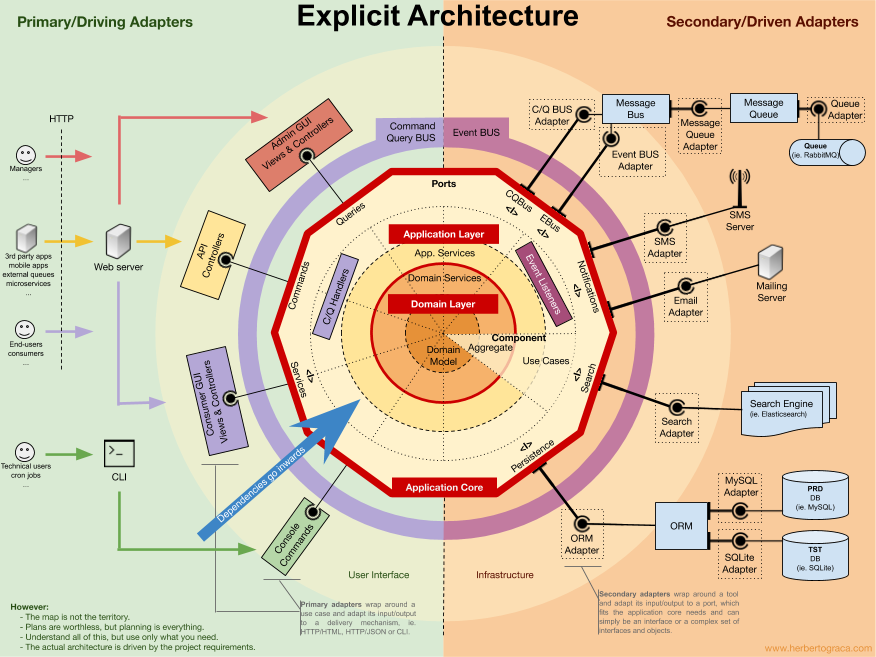| 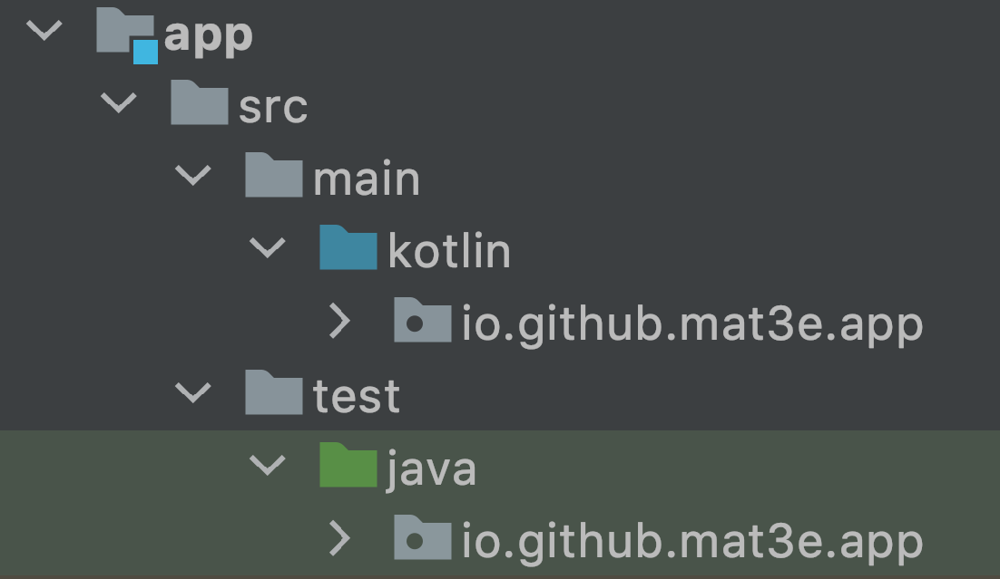 | 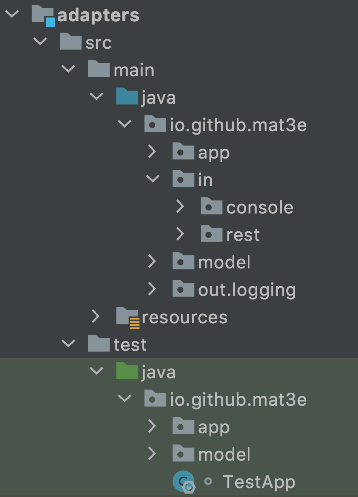 |
| 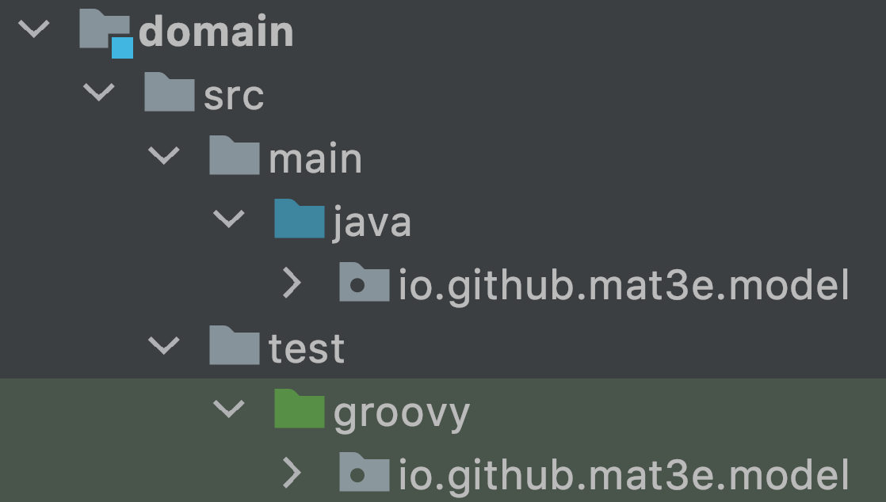 |
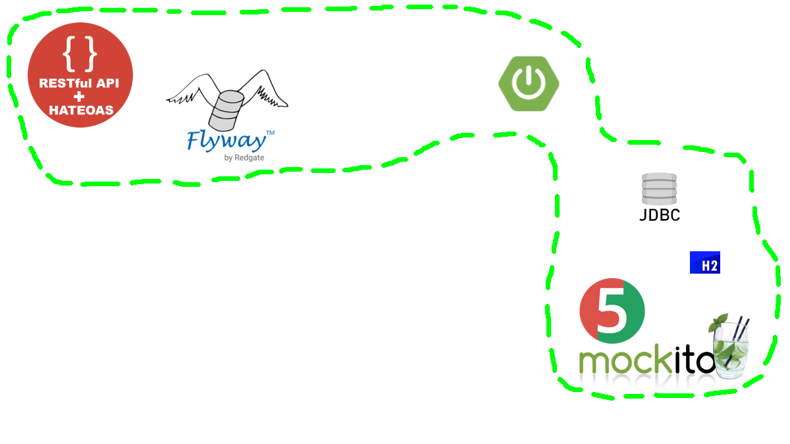
DDD taktyczne
- Podstawowe Building Blocks DDD (artykuł)
- Domain Driven Design - Sposób na projektowanie złożonych modeli biznesowych (artykuł)
- DDD Q&A - wersja rozszerzona
- Keep IT clean: mid-sized building blocks and hexagonal architecture
- Moje rozumienie DDD na przykładzie bajki o 3 świnkach
- github.com/full-stack-engineering/java-clean-architecture
{kind=link}